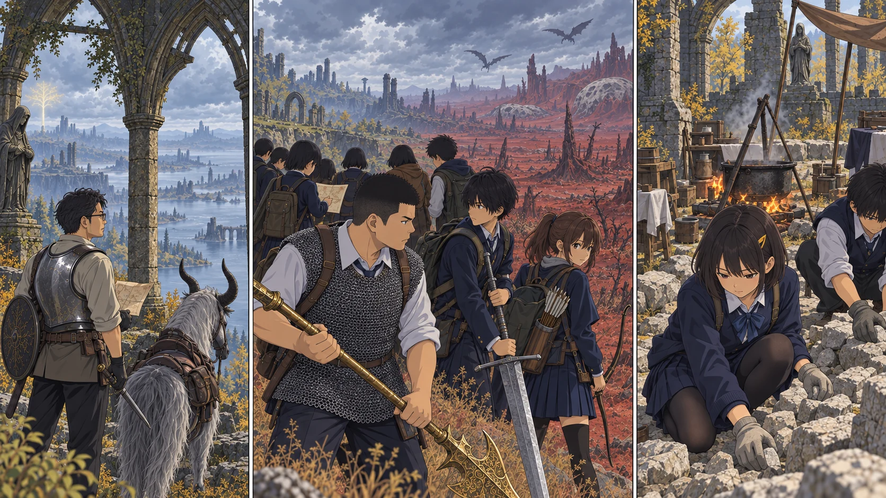

最新の本編へ進めなかった日の地図。

【DAY44 朝｜手入れ】槍先を布で拭くと、細い欠けが引っ掛かった。陽太は初めて、その傷を自分で見つけた。前衛四人の武器と盾、計十点をまとめて手入れする。黄金のハルバードも例外ではない。百ルーンは強さを買ったのではなく、昨日までの強さを取り戻す代金だった。
教会組二十人にも、全員一つずつ生命力を積み足した。Lv12。先生と探索隊へ先に回していたルーンが、ようやく生活を支える人たちへ届く。「水桶を持って転んでも、少しは丈夫になったかな」と航が言う。「転ばないで」と結菜が即答した。
【北の谷｜先生】昨日見えた塔へまっすぐ進もうとすると、道が崖に終わる。先生は地図を畳み直して湖へ下り、北の谷から坂を上った。丘の上にあるベイルム教会は、壊れていても、来た方向を確かめられる目印だった。祝福の位置だけ記す。触れない光を一つ増やすことにも、意味がある。
その先は、隠れ場所と隠れ場所の間が長い。濡れた斜面をトレントで抜けられても、塔へ近づく頃には帰還時刻の余裕がなくなる。先生は引いた。パリィの練習を積んでも、あの光を盾で弾けるわけではない。今日は塔の足元を見ていない、と日誌に明記した。
【ケイリッド手前｜蓮】空の色が変わったところで、蓮は列を止めた。見通せる道が、安全な道とは限らない。飛ぶ影が遠い地面へ落ち、回り込もうとした先は赤黒く湿っている。砦の名前は知っている。そこへ十二人を連れていける道は、まだ知らない。
「ここで矢を使い切ったら、箱まで行ってどうする」。千夏の声に、直人が剣を下げた。大地もハルバードを肩へ戻す。誰も追いかけてきていないうちに、同じ人数で引き返した。ファロス砦は、今日は見ていない。帰還後、蓮は余白を塗りつぶさず、危険を見た地点に小さな印だけ置いた。
【教会｜午後】取水は二往復。鹿は一頭。石材は増えたが、壁になったとは数えない。乾いた平石を下へ、細かな石を隙間へ。誠たちは、ゲームの操作よりずっと遅い手つきで、明日使える材料を整えた。留守番にも、毎日少しずつ変わる仕事があった。
【18:30｜反省会】「右は、まだです」。蓮が言う前から、先生には袋の軽さで分かっていた。「分かった。今日はどこで止まった？」。責めるためではない。次の道を考えるために聞く。残り五十六日。焦りはある。それでも、行けなかったことを隠す地図より、引き返した場所が分かる地図の方が使える。